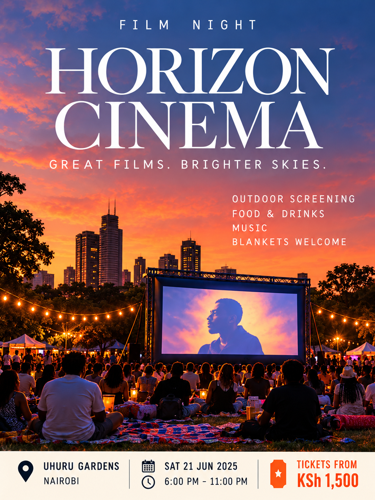

Poster study / 07 · Film / Outdoor cinema
HORIZON CINEMA
“Great films. Brighter skies.” — as printed on the artwork


The approved original is shown here exactly as it was made: nothing is cropped, re-lettered or recoloured. Print outputs a single A4 portrait sheet with the artwork at maximum size; the PNG is the full-resolution file for social, slide and layout use.
Why it exists
A fictional cinema-under-the-stars series that treats the setting as part of the film experience.
What is printed on the artwork
- Category line
- Film night
- Tagline
- Great films. Brighter skies.
- Key line-up
- Outdoor screening
- Food & drinks
- Music
- Blankets welcome
- Venue
- Uhuru Gardens, Nairobi
- Date
- Sat 21 Jun 2025
- Time
- 6:00 PM – 11:00 PM
- Entry
- Tickets from KSh 1,500
Speculative design. The fictionally branded venue, date and prices printed inside the artwork are illustrative and are not a real event or ticket offer.
Design decisions
- Who it is for
- Film lovers, friends and slow-evening romantics
- Typography direction
- Prata — chosen for its cinematic, traditional elegance. The small supporting information uses Inter for readability.
- Visual idea
- A graceful cinematic serif sits over a painted dusk gradient; the glowing screen becomes the clear visual cue that this is about film.
- Personality
- Dreamy · Cinematic · Intimate
Palette
Dusk blue
#3F5F96
#3F5F96
Sunset orange
#F08343
#F08343
Deep plum
#2A1F3D
#2A1F3D
Warm white
#F7F2EA
#F7F2EA